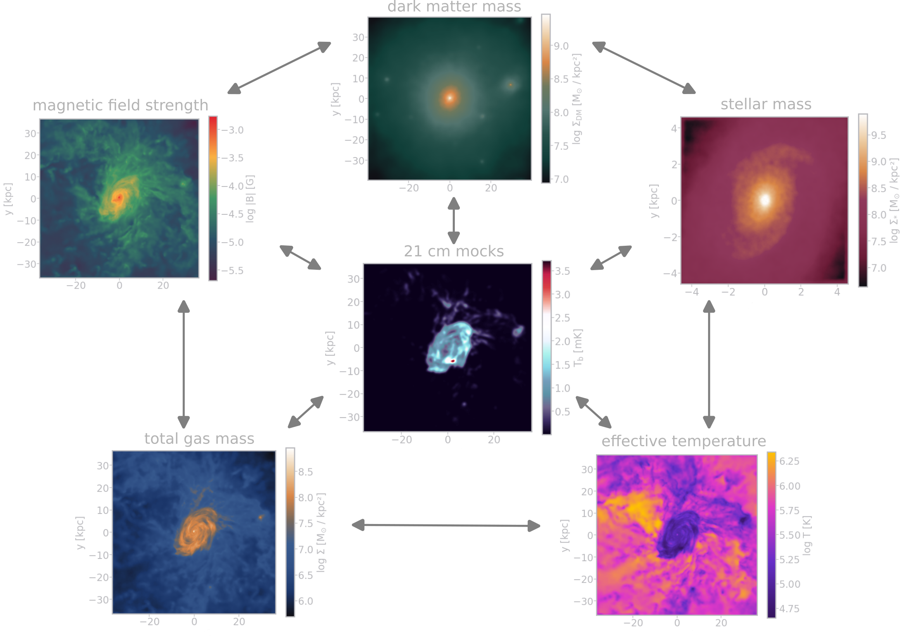

Connecting galaxy theory and observables using generative deep learning
SKA research at
Zurich University of Applied Sciences (ZHAW)
Centre for Artificial Intelligence (CAI)
Institute for Business Information Technology (IWI)
Aug 27, 2025
Philipp Denzel, Yann Billeter, Frank-Peter Schilling, Elena Gavagnin
SKA research at
Zurich University of Applied Sciences (ZHAW)
Centre for Artificial Intelligence (CAI)
Institute for Business Information Technology (IWI)
Zurich University of Applied Sciences (ZHAW)
Institute for Business Information Technology (IWI)
Philipp Denzel, Yann Billeter, Frank-Peter Schilling, Elena Gavagnin
Generative AI "shortcomings"
Central Question
- How do we measure physical plausibility?
- What are plausible galaxies?
Generative AI for galaxy (component) emulation
Outlook
How to build galaxies
You start with 1% of this:
see lecture by Van den Bosch
The Cosmic Microwave Background
Figure 1: 2006, Credit: ESA/Planck
CMB anisotropies

Figure 2: 2006, Credit: ESA/Planck
Dark matter takes over
Figure 3: KIPAC/Stanford; Credit: O. Hahn and T. Abel (2016)
Ingredients for galaxies
Figure 4: recipe for galaxies as imagined by GPT5
Simulations as an expression of theory
- complex, realistic models
- self-consistent dynamics
- physics: on a wide range of scales
- implicit models:
- what if we want to sample more
of those galaxy models?
- what if we want to sample more

Figure 5: IllustrisTNG simulations
The cost of IllustrisTNG
Stated usage from Nelson et al (2017):
- CPU core time: 55 Mh
- on Hazel Hen (Cray XC40: typically 0.5kW per 24 core node)
So, approx. 2.29M node hours @ 0.5kW \(\rightarrow\) 1+ GWh (570'000 kg CO2e)
(A)I can do better
Our model suite run on a mix of Nvidia V100/A100/H100/H200 GPUs
- GAN-based models required 140.25 kWh for training (70 kg CO2e)
- inference: ~1 kWh for inference
- diffusion-based models required 520.25 kWh for training (260 kg CO2e)
- inference: double the amount
Multi-domain galaxy image dataset
- projected Illustris TNG50-1 galaxies
- 7 domains: dark-matter, stars, gas,
HI, temperature, magnetic field, 21cm- 21cm mocks following
Villaescusa-Navarro et al. (2018) - Karabo mock upgrade in progress
- 21cm mocks following
- ∼ 2'000+ galaxies, 6 snapshots,
5 rotations in 3D, ∼ 504'000 images - each galaxy \(\ge\) 10'000 particles
- scale: 2 baryonic half-mass radii

Generative Deep Learning Models
- conditional GANs (generative adversarial networks)
- diffusion-based models
- combination of both
conditional GANs

DDPM

Sampling from the models
(input, simulation, AI generated)
Figure 6: Gas ⟶ DM
(input, simulation, AI generated)
Figure 7: Gas ⟶ Stars
(input, simulation, AI generated)
Figure 8: Gas ⟶ HI
(input, simulation, AI generated)
Figure 9: Gas ⟶ mock 21cm brightness temperature
(input, simulation, AI generated)
Figure 10: Gas ⟶ temperature
(input, simulation, AI generated)
Figure 11: Gas ⟶ magnetic field strength
Measuring plausibility?
- Pixel-level CV metrics do not work well for this:
- MSE (mean squared error): \[ \text{MSE}\left(x, \hat{x}\right) = \frac{1}{N} \sum_{i=1}^{N} \left(x_i - \hat{x}_i\right)^2 \]
- PSNR (peak signal noise ratio): \[ \text{PSNR}\left(x, \hat{x}\right) = 10 \cdot \log_{10} \left( \frac{\text{c}^2}{\text{MSE}\left(x, \hat{x}\right)} \right) \]
- SSIM (structural similarity index measure): \[ \text{SSIM}\left(x, \hat{x}\right) = \frac{\left(2\mu_x\mu_{\hat{x}} + k_1\right)\left(2\sigma_{x\hat{x}} + k_2\right)}{\left(\mu_x^2 + \mu_{\hat{x}}^2 + k_1\right)\left(\sigma_x^2 + \sigma_{\hat{x}}^2 + k_2\right)} \]
Perceptual metrics
- Fréchet Inception Distance: \[ \|\mu_r - \mu_g\|^2 + \text{Tr}\left(\Sigma_r + \Sigma_g - 2(\Sigma_r \Sigma_g)^{1/2}\right) \]
- where \(\mu\) and \(\Sigma\) are mean and standard deviation of neural-network extracted features (InceptionV3)
- or LPIPS (Learned Perceptual Image Patch Similarity)
Astronomical/astrophysical metrics
- structural astronomical CAS parameters by Conselice (2003)
- Concentration: Means of spatial distributions within fixed radii
- Asymmetry: compare original and 180-degree-rotated image
- Smoothness/Clumpiness: compare original and Gaussian-blurred image
- Centre of mass drift
- Radially averaged profiles
- Integrated quantities
- Power spectra
Asymmetry deviation (simulations vs AI-generated)
Figure 12: Mean asymmetry deviation of the evaluation set (mock 21cm brightness temperature)
Figure 13: Mean asymmetry deviation of the evaluation set (stellar mass)
Clumpiness deviation (simulations vs AI-generated)
Figure 14: Mean clumpiness deviation of the evaluation set (Gas ⟶ DM)
Figure 15: Mean clumpiness deviation of the evaluation set (DM ⟶ Gas)
Statistics of integrated quantities
HI
DM
Star
21cm
Temperature

B-Field
Conclusion & Findings
- Pixel-based metrics work to a degree
- Perceptual metrics (such as FID) correlate much more with astrophysics
- Updated and tuned GAN architecture matches performance of diffusion models
Contact
Email: philipp.denzel@zhaw.ch
References
- simulations: IllustrisTNG project
- 21cm mocks: Villaescusa-Navarro et al. (2018)
- GitHub repository: https://github.com/CAIIVS/chuchichaestli
- PyTorch astronomy metrics: https://github.com/phdenzel/skais-mapper
- cGAN: Isola et al. (2016)
- DDPM: Ho et al. (2020)